Larry The Dinosaur 2The Official Strategy Guide |
|
|
Guide Sections Home Building Layout Walkthrough Part I Part II Part III Part IV |
When you start the game, you get a history of what happened getting you up-to-date on
the story. Then you are taking to a scene where Larry and Steve just finished a game of chess. 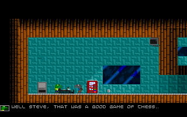 Unfortuanetly, Steve drinks some poisoned cola and collapses. 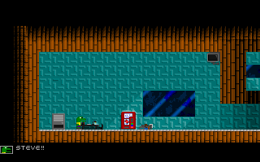 Finally, you get control Larry. Your objective as of now is to find help for steve. If you keep on running to the right, you'll run into a fellow janitor. 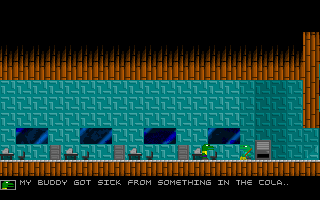 Larry tells him that his buddy, Steve, needs help. Luckily, the janitor used to be a doctor, so he can help. They rush to steve. 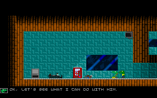 Before the janitor could do anything, a rockmonster crashes through the window and chews him up. 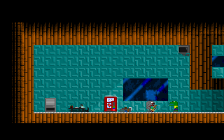 You could punch the rockmonster to death, but there's no need. Run away to the right away from the rockmonster. Keep on going until you reach the elevator. 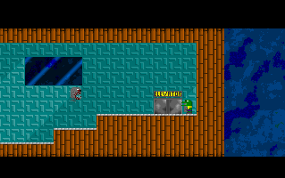 From there, another rockmonster leaps into the air towards Larry. Before Larry gets chomped to death, Barney comes out of the elevator and blast the rockmonster into pieces. 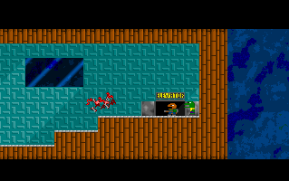 After Larry is saved by Barney, they chit-chat a little bit and head to the weapons locker. 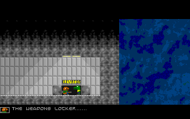 Barney gives you a blue-access card. Follow barney into the weapons locker. He'll give you a rap-up of what's been happening. 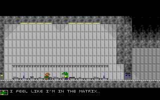 Once Barney's done talking, your free to go. Larry's objective now is to find a yellow-access card. Before you go, you'll want to grab some weapons and ammo. Press "P" to pick up items. There is a shotgun and a pistol in that room that Larry can get. There is also shotgun ammo and bullets. Press "TAB" to access your menu, or also known as the status screen. 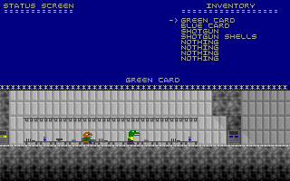 Use the arrow keys to move up and down the menu. Press "ENTER" to select an item. When you select an item, a list of 4 actions will appear for you to choose what to do with that item. 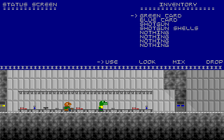 "USE" will let you use the item if allowed. The access cards are used automatically when you are next to a door. "LOOK" will show a description of the item. 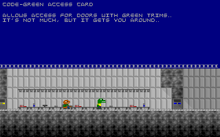 "MIX" will let you choose another item to mix your first item with. "DROP" will drop them item selected. If you look at an item, press "ENTER" to return back to the menu. As you can see, you only have 8 spaces to store items. So it is imperitive that you drop what you don't need so you have space for more important things you pick up along the way. You don't need your green card anymore since the blue card is everything the green card is plus more. You can drop it to make room for more space. To drop it, select the "GREEN CARD" and then select "DROP" by moving the arrow to it and pressing "ENTER". 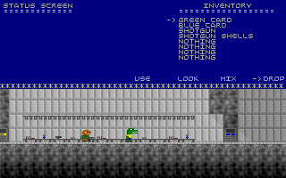 Once you drop it, you have an extra space to store another item. Before you can use a weapon, you need to equip it. To equip it, select the weapon. Then select "USE", and the weapon will be equipped. However, you still can't use the weapon until you load it with ammo. To load the weapon with ammo, select the ammo for the weapon and select "USE". "SHOTGUN SHELLS" are for the shotgun and "BULLETS" are for the pistol. Now you can exit the menu and press "CTRL" or "Q" to shoot the weapon. 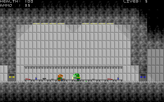 Grab some more ammo and your ready to go. It'd be a good idea to grab some first aid kits also. To leave the room, go infront of the elevator and press "TAB". A menu of the building will appear in which you can select which floor you want to go to. 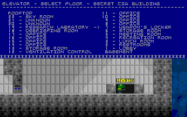 Phew! 22 floors for you to explore. Don't forget the rooftop and basement also. Really, only half of those floors are needed to complete the game. Continue to Part II |